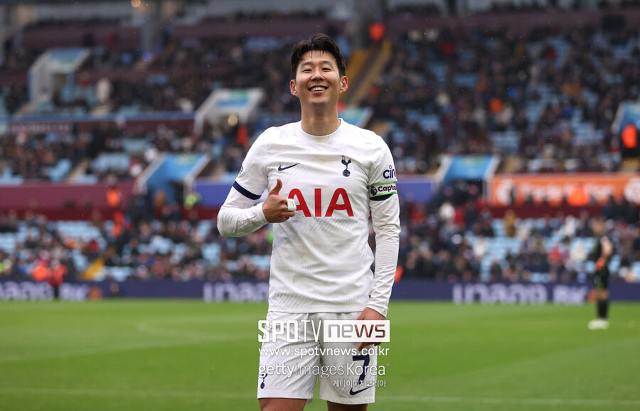
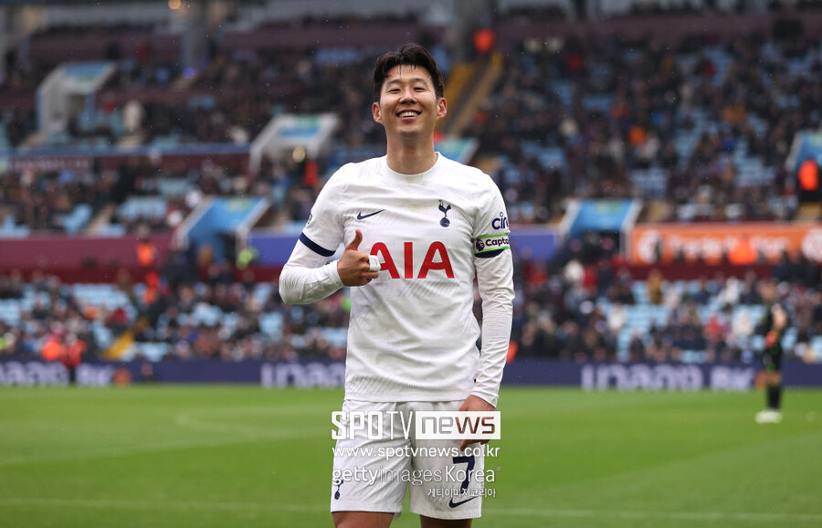

손흥민(32, 토트넘 홋스퍼)은 올여름 스퍼스의 공격 보강을 위해 영입 대상 1순위로 꼽힌 앙투안 세메뇨(25, AFC 본머스) 앞에서 뛰어난 기량을 발휘함.
손흥민은 최근 경기에서 환상적인 파넨카킥으로 팀을 구해내며 베테랑 면모를 보여줌.
토트넘은 공격진 개편을 위해 세메뇨를 3350만 파운드(약 629억 원)에 영입할 계획.
세메뇨는 이번 시즌 9골 5도움을 기록하며 팀의 주요 목표로 설정됨.
손흥민은 본머스와의 경기에서 교체 출전하여 1골을 기록, 팀의 2-2 무승부에 기여함.
경기 후 손흥민은 승점 3을 얻지 못한 것에 실망감을 드러냄.
토트넘은 오는 14일 AZ알크마르와의 UEFA 유로파리그 16강 2차전을 대비하고 있음.